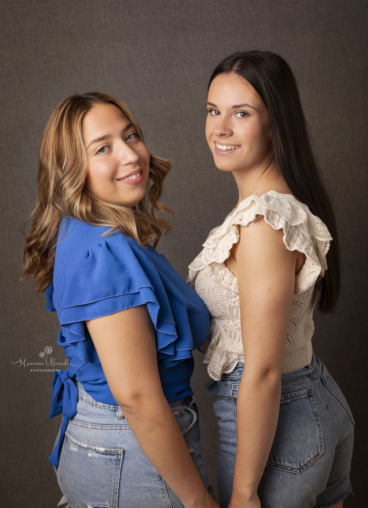

MAJAS SALIENTES 2022
Mara González Diez
Candela González Diez
Verónica Tabuenca Marín
No veíamos el momento de escribir estas líneas que nos recuerdan que ya estamos en las puertas de nuestra semana grande.
Fiestas, que cada vez cuesta más organizar, ya que cada año es más complicado formar comisión.
Son días en los que se trabaja mucho, pero también se disfruta mucho, porque acudimos a todos los actos, se entablan relaciones y amistades con personas nuevas... en fin, se viven de manera diferente. Así que desde aquí queremos animaros a tod@s a formar parte de las próximas comisiones, si cada uno aporta un poco y sacamos algo de tiempo dentro de nuestras posibilidades, se puede conseguir, y nuestras fiestas seguirán siendo las mejores.
También queríamos desearos unas felices Fiestas del Rosario 2023 y que nos acompañéis y participéis en todos los actos que con tanta ilusión hemos preparado. Que nuestras calles se llenen de color y alegría en estos días y que por favor sepáis perdonar los posibles fallos que podemos cometer.
Ganadería: Adrián Dominguez
8:00hEncierro y vacas por la calle
9:00hBecerras en la plaza
Ganadería: Hermanos Marcén
17:00hVacas en la plaza
Ganadería: Barquero
17:00hVacas en la plaza + GRAND PRIX
Ganadería: Hermano Oliva Escudero
17:00hVacas en la plaza
Ganadería: Raúl Izquierdo
17:00hVacas en la plaza
00:00hToro de ronda
Ganadería: Adrián Dominguez
8:00hEncierro y vacas por la calle
9:00hBecerras en la plaza
Ganadería: Eulogio Mateo
17:00hVacas en la plaza + Exhibición tauromaquias
00:00hToro de ronda
Ganadería: Hermanos Marcén
17:00hVacas en la plaza
Orquesta NUEVA ERA + Discomovil DJ SUAL
Orquesta ZOOM + Discomovil DJ JOAN ROCA
Orquesta NUEVA ALASKA + Discomovil DJ DILOY
LOS CHALANES ( en el corro )
Grupo MAGIA NEGRA
Orquesta ESTRELLA CENTRAL + Discomovil DJ TGSN
MACROFIESTA CON DJ`S
CASSINO LIVE - ÓSCAR HERRERA - ADRIÁN GZ - LAZARICO
Mara González Diez
Candela González Diez
Verónica Tabuenca Marín
Mariola Longares benedí
Patricia Strachinuta
Rubén Vela Revuelto
Enma benedí Gracián

Nos acompañaran durante esta noche tan especial la orquesta Nueva era y para acabar la noche contaremos con Dj. Sual
12:00h¡¡¡ Vamos chic@s !!! Todos a la plaza, preparad los deportivos nuevos y cachirulo al cuello, para correr delante de los cabezudos acompañados de la charanga Ablitas.
15:30h¡¡Es nuestro momento Brean@s !! Ataviados con nuestros trajes de gala, acudiremos a la plaza para escuchar el pregón que este año corre a cargo de la peña Pacharán.
Tras el disparo del chupinazo, recorreremos las calles del pueblo con la Charanga y recogeremos a las Majas de Fiestas. Durante el recorrido nos acompañará el camión de la cerveza para no pasar sed.
18:00h Haremos pasillo a nuestra querida Virgen del Rosario para realizar la tradicional OFRENDA DE FLORES.
19:30h Solemnes COMPLETAS en honor a la Virgen del Rosario.
23:30hPor si el cuerpo no está muy “ entonado “ encenderemos la HOGUERA en la plaza, donde nos tomaremos un vinito de la tierra mientras bailamos con la charanga.
01:15hComo ya habremos cogido ritmo, bajaremos al pabellón para seguir bailando con la Orquesta ZOOM. Al finalizar continuaremos la noche con la DISCOMOVIL, contaremos con la actuación de DJ. JOAN ROCA.
08:10hROSARIO de la Aurora.
08:30hMisa Primera.
11:30hMISA MAYOR en honor a nuestra patrona, la Virgen del Rosario. Se invita a todo el pueblo a vestir el traje regional.
13:30hVERMÚ – CONCIERTO en el pabellón a cargo de la Orquesta NUEVA ALASKA, acompañados por las Majas de Fiestas, el Ayuntamiento y la Comisión.
16:30h¡¡Venga Brean@s!! Todos al Piedrabuena para animar a nuestro equipo.
CD. BREA - DEPORTIVO ARAGÓN
"¡AUPA EL BREA!"
19:30hROSARIO General por las calles de la villa, acompañados por la Banda Municipal.
23:30hVerbena en la plaza para quemar las últimas cepas.
01:15hTodos al pabellón a mover el esqueleto con la Orquesta NUEVA ALASKA, que la noche hoy es larga…
Seguiremos con la DISCOMOVIL y contaremos con la actuación de DJ. DILOY.
07.15hLa charanga ABLITAS bajará a buscarnos al pabellón para dar la vuelta al pueblo.
08.00hPrimer encierro de las fiestas a cargo de la ganadería ADRIÁN DOMÍNGUEZ (Funes). A continuación encierro chiqui y suelta de vaquillas en la plaza.
11.00hMisa de Difuntos.
16.30hTodos juntos iremos a buscar a las Majas de Fiestas.
17.00hSuelta de vacas en la plaza a cargo de la ganadería HNOS. MARCÉN ( Villanueva de Gállego ).
19.00hRifa Benéfica
23.30hVerbena en el Corro. Estar atentos, porque se ha escapado un toro y no sabemos por donde puede estar…
01.00hRuta Peñista acompañados de la Charanga
12.00h Concentración de hombres en la plaza para ir a buscar a los “MAJOS“ que este año son de la peña LA RETRO, donde nos invitarán a vermutear.
A continuación VERMÚ – TORERO por nuestros bares acompañados por la Charanga.
17.00h¡¡¡ Atención Breanos !!! vuelve el GRAN PRIX con su becerra estrella MARIA FERNANDA ( la vaquilla que asusta, encorre y anda ) donde podremos demostrar esa sangre torera que llevamos dentro…
Seguidamente Vacas de la ganadería BARQUERO ( Quinto de Ebro ).
19.00hRifa Benéfica.
23.30hVerbena en el Corro ¡¡¡ Cuidado con las Chispas !!!.
01.00hRuta Barítima por la localidad.

12.00h ¡¡ Vamos Mujeres !! que hoy es vuestro dia. Misa Mayor en honor a todas vosotras.
A continuación, las chicas de la peña STRAGOS ( que son las que nos representan este año ) nos invitan a un “PISCOLABIS“ para comenzar con fuerzas el recorrido por el pueblo.
14.00hComida en el pabellón para reponer energías que el dia es largo…
Seguidamente Vacas de la ganadería BARQUERO ( Quinto de Ebro ).
16.30hLa Charanga bajará a buscarnos al pabellón para subir con buen ritmo hasta la plaza.
17.00hSesión de Vacas a cargo de la ganadería HNOS. OLIVA ESCUDERO ( Quinto de Ebro ) Haremos un descanso para repartir el tradicional bocadillo de sardina
19.00hRifa Benéfica.
Al finalizar acompañados por la charanga acudiremos a la peña ADUANA que celebra su 20 Aniversario y nos invita a un refrigerio.
23.30hVerbena en el Corro donde se realizará el baile del farolillo. ¿por dondre vendrán las chispas hoy?
01.15hctuación en el corro del grupo LOS CHALANES.

11.30h¡¡ Vamos niñ@s !! Todos a la plaza donde nos esperan los cabezudos para recorrer el pueblo.
12.30hConcentración de peñas en la plaza para comenzar a preparar esos deliciosos Ranchos.
16.30hGran actuación de DANI FERNÁNDEZ, que nos hará pasar una sobremesa espectacular.
18.00hGran “PELEA DE GALLOS MUSICAL“. Ir afinando esas gargantas para demostrar lo bien que cantamos en Brea.
21.00hOs esperamos a todos en la plaza, donde cenaremos un rico >ESTOFADO DE TERNERA.
23.30hComenzaremos en la plaza el recorrido con el “CAMIÓN MUSICAL“ donde DJ. DAVID MONTESINOS nos pondrá el ritmo para rebajar la cena.
01.15h¡¡Ánimo Peñistas!! Que no podemos fallar ahora. Bajaremos al pabellón a rematar el dia con el grupo MAGIA NEGRA.
11.30hBombas Japonesas para los más pequeños. Seguidamente daremos la vuelta al pueblo con los cabezudos.
12.30hParque Infantil PITUFILANDIA en el pabellón.
14.30hCogeremos los bocatas y comeremos juntos en el pabellón.
16.15hLa charanga ABLITAS bajará a buscarnos al pabellón para ir a recoger a nuestros "MAJIC@S" a las peñas COGORZO y CÓMPLICES.
17.00hSuelta de Vacas en la plaza a cargo de la ganadería RAÚL IZQUIERDO (Codo).
19.00hRifa Benéfica.
Al finalizar, la peña KGB nos invita a un refrigerio por su 30 Aniversario.
20.30h¡¡Venga niñ@s!! Que el día es vuestro y aún no ha terminado. Bajaremos al pabellón para disfrutar de una sesión especial con la Orquesta ESTRELLA CENTRAL.
00.00hTORO DE RONDA a cargo de la cuadrilla de emboladores SANTA PANTARIA. Seguidamente, suelta de vacas de la ganadería RAÚL IZQUIERDO (Codo).
01.15hBajaremos al pabellón a continuar con la Orquesta ESTRELLA CENTRAL. La noche es larga... Al finalizar seguiremos con la DISCOMOVIL y los TGSN serán los encargados de poner el ritmo hasta el amanecer...


07.15hLa charanga ABLITAS nos recogerá en el pabellón para dar la vuelta al pueblo.
08.00hÚltimo Encierro de la feria a cargo de la ganadería ADRIÁN DOMÍNGUEZ (Funes). Seguidamente, encierro Chiqui y suelta de vaquillas en la plaza.
16.30hTodos juntos iremos a buscar a las Majas de Fiestas.
17.00hSesión taurina a cargo de la ganadería EULOGIO MATEO (Carcar). Habrá una pequeña “EXHIBICIÓN DE TAUROMAQUIAS“.
19.00hRifa benéfica. Al finalizar, CARRETONES en la plaza para nuestros pequeños valientes.
00.00hTORO DE RONDA a cargo de la cuadrilla de emboladores SANTA PANTARIA. Seguidamente suelta de vaquillas de la ganadería EULOGIO MATEO (Carcar).
01.15h“MACROFESTIVAL MUSICAL“ que no podía faltar en nuestras fiestas. Cerraremos esta semana por todo lo alto, espectacular fiesta de luz y sonido de la mano de los DJ más punteros en diferentes estilos musicales.
DJ CASSINO LIVE - DJ ÓSCAR HERRERA - DJ ADRIÁN GZ - DJ LAZARICO
08.30hRosario de la Aurora.
12.30hMisa Mayor.
16.30hIremos a buscar a las Majas de Fiestas por última vez este año, acompañados de la Charanga STRAGO (Utebo).
17.00hÚltima sesión de vacas de la feria a cargo de la ganadería HNOS. MARCEN (Villanueva de Gállego).
19.00hRifa Benéfica.
19.30hMerienda en el pabellón para los más mayores, donde las Majas de Fiestas les harán entrega de un obsequio.
22.00hFUEGOS ARTIFICIALES Y TRACA FÍN DE FIESTAS en el parque del zapatero a cargo de la Pirotécnia Manchega.